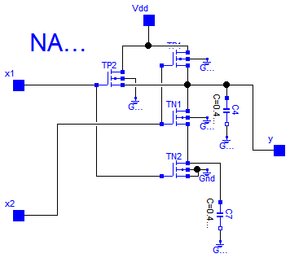
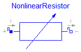
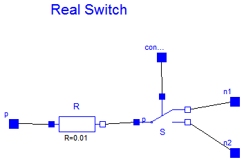
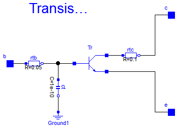

This package contains some utility components used by package examples. These components are auxiliary components that should not be used like true MLS components since they are designed the purpose of the examples only, not for common use.
Extends from Modelica.Icons.Package (Icon for standard packages).
| Name | Description |
|---|---|
| Nand | CMOS NAND Gate (see Tietze/Schenk, page 157) |
| NonlinearResistor | Chua's resistor |
| Ideal switch with resistance | |
| Transistor with resistance an capacitance |
 Modelica.Electrical.Analog.Examples.Utilities.Nand
Modelica.Electrical.Analog.Examples.Utilities.Nand
The nand gate is a basic CMOS building block. It consists of four CMOS transistors.
Reference:
Tietze, U.; Schenk, Ch.: Halbleiter-Schaltungstechnik. Springer-Verlag Berlin Heidelberg NewYork 1980, p. 157
| Type | Name | Description |
|---|---|---|
| Pin | x1 | |
| Pin | x2 | |
| Pin | Vdd | |
| Pin | y |
model Nand "CMOS NAND Gate (see Tietze/Schenk, page 157)"Semiconductors.PMOS TP1( W=6.5e-6, L=3.1e-6, Beta=1.05e-5, Vt=-1, K2=0.41, K5=0.8385, dW=-2.5e-6, dL=-2.1e-6); Semiconductors.PMOS TP2( W=6.5e-6, L=3.1e-6, Beta=1.05e-5, Vt=-1, K2=0.41, K5=0.8385, dW=-2.5e-6, dL=-2.1e-6); Semiconductors.NMOS TN1( W=6.5e-6, L=3.1e-6, Beta=4.1e-5, Vt=0.8, K2=1.144, K5=0.7311, dW=-2.5e-6, dL=-1.5e-6); Semiconductors.NMOS TN2( W=6.5e-6, L=3.1e-6, Beta=4.1e-5, Vt=0.8, K2=1.144, K5=0.7311, dW=-2.5e-6, dL=-1.5e-6); Basic.Capacitor C4(C=0.4e-13); Basic.Capacitor C7(C=0.4e-13); Basic.Ground Gnd; Basic.Ground Gnd2; Basic.Ground Gnd3; Basic.Ground Gnd6; Basic.Ground Gnd7; Basic.Ground Gnd8; Interfaces.Pin x1; Interfaces.Pin x2; Interfaces.Pin Vdd; Interfaces.Pin y; equationconnect(TN1.S, TN2.D); connect(TN2.B, Gnd.p); connect(TN2.D, C7.p); connect(TN2.S, Gnd.p); connect(TP1.S, TN1.D); connect(TP1.G, TN1.G); connect(C4.n, Gnd2.p); connect(C7.n, Gnd3.p); connect(TP2.B, Gnd6.p); connect(TN1.B, Gnd7.p); connect(TP1.B, Gnd8.p); connect(TP2.G, x1); connect(TP2.G, TN2.G); connect(TN1.G, x2); connect(TP2.S, TN1.D); connect(TN1.D, C4.p); connect(Vdd, TP1.D); connect(TP2.D, Vdd); connect(C4.p, y); end Nand;
 Modelica.Electrical.Analog.Examples.Utilities.NonlinearResistor
Modelica.Electrical.Analog.Examples.Utilities.NonlinearResistor
This is the only nonlinear component for Chua';s circuit. It is a piecewise linear resistor with both an inner and an outer range, which includes the inner one. The slopes of both ranges are given by parameters. The resistance caracteristic is continuous. For Chua';s circuit both slopes have to be chosen to be negative.
Extends from Interfaces.OnePort (Component with two electrical pins p and n and current i from p to n).
| Type | Name | Default | Description |
|---|---|---|---|
| Conductance | Ga | Conductance in inner voltage range [S] | |
| Conductance | Gb | Conductance in outer voltage range [S] | |
| Voltage | Ve | Inner voltage range limit [V] |
| Type | Name | Description |
|---|---|---|
| PositivePin | p | Positive pin (potential p.v > n.v for positive voltage drop v) |
| NegativePin | n | Negative pin |
model NonlinearResistor "Chua's resistor"
extends Interfaces.OnePort;
parameter SI.Conductance Ga "Conductance in inner voltage range";
parameter SI.Conductance Gb "Conductance in outer voltage range";
parameter SI.Voltage Ve "Inner voltage range limit";
equation
i = if (v < -Ve) then Gb*(v + Ve) - Ga*Ve else if (v > Ve) then Gb*(v - Ve)
+ Ga*Ve else Ga*v;
end NonlinearResistor;
 Modelica.Electrical.Analog.Examples.Utilities.RealSwitch
Modelica.Electrical.Analog.Examples.Utilities.RealSwitch
This component is a special kind of a commuting switch which possesses an additional constant resistance. This resistance was necessary in an example. It is not designed for common use.
| Type | Name | Description |
|---|---|---|
| Pin | p | |
| Pin | n1 | |
| Pin | n2 | |
| Pin | control |
model RealSwitch "Ideal switch with resistance"Ideal.ControlledIdealCommutingSwitch S(level=2.5); Basic.Resistor R(R=0.01); Interfaces.Pin p; Interfaces.Pin n1; Interfaces.Pin n2; Interfaces.Pin control; equationconnect(p, R.p); connect(R.n, S.p); connect(n1, S.n1); connect(n2, S.n2); connect(control, S.control); end RealSwitch;
 Modelica.Electrical.Analog.Examples.Utilities.Transistor
Modelica.Electrical.Analog.Examples.Utilities.Transistor
Since the simple bipolar transistor model does not have base or collector resistances both are added in this component. Additionally, a capacity is added to the base pin. See the schematic for more detailes. In such a way the transistor model can be enhanced to become more common.
| Type | Name | Description |
|---|---|---|
| Pin | c | |
| Pin | b | |
| Pin | e |
model Transistor "Transistor with resistance an capacitance"Basic.Resistor rtb(R=0.05); Basic.Resistor rtc(R=0.1); Basic.Capacitor ct(C=1e-10); Semiconductors.NPN Tr( Bf=50, Br=0.1, Is=1e-16, Vak=0.02, Tauf=0.12e-9, Taur=5e-9, Ccs=1e-12, Cje=0.4e-12, Cjc=0.5e-12, Phie=0.8, Me=0.4, Phic=0.8, Mc=0.333, Gbc=1e-15, Gbe=1e-15, Vt=0.02585); Basic.Ground Ground1; Interfaces.Pin c; Interfaces.Pin b; Interfaces.Pin e; equationconnect(rtb.n, Tr.B); connect(rtb.n, ct.p); connect(ct.n, Ground1.p); connect(Tr.C, rtc.p); connect(rtc.n, c); connect(b, rtb.p); connect(Tr.E, e); end Transistor;